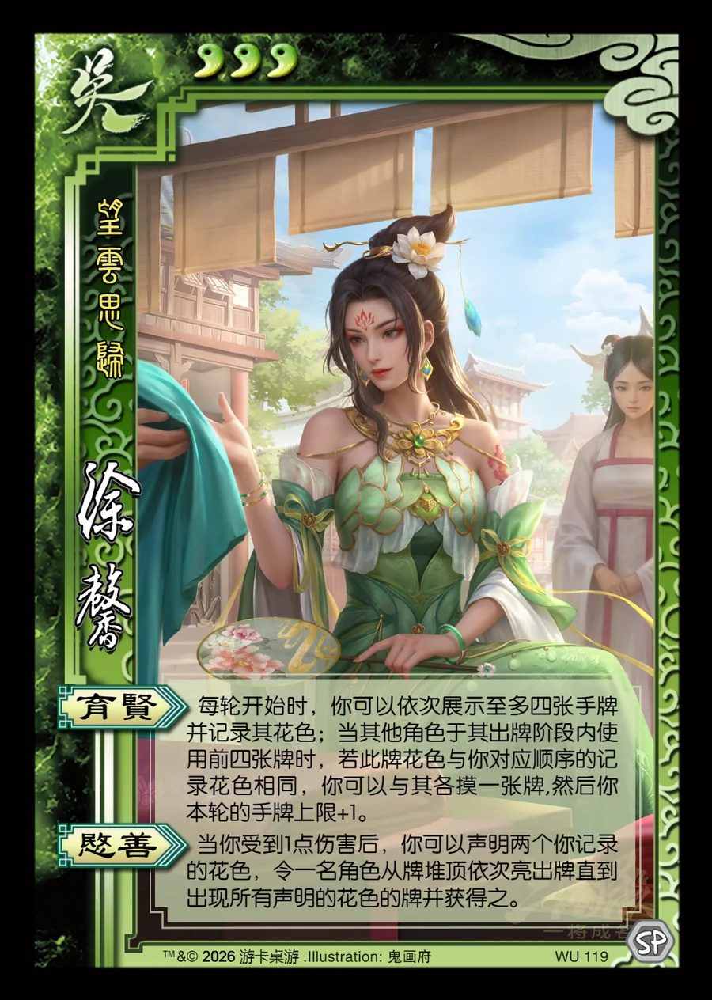

点击卡面查看大图
吴
徐馨
♥3望云思归
育贤
每轮开始时，你可以依次展示至多四张手牌并记录其花色；当其他角色于其出牌阶段内使用前四张牌时，若此牌花色与你对应顺序的记录花色相同，你可以与其各摸一张牌,然后你本轮的手牌上限+1。
愍善
当你受到1点伤害后，你可以声明两个你记录的花色，令一名角色从牌堆顶依次亮出牌直到出现所有声明的花色的牌并获得之。

点击卡面查看大图
望云思归
每轮开始时，你可以依次展示至多四张手牌并记录其花色；当其他角色于其出牌阶段内使用前四张牌时，若此牌花色与你对应顺序的记录花色相同，你可以与其各摸一张牌,然后你本轮的手牌上限+1。
当你受到1点伤害后，你可以声明两个你记录的花色，令一名角色从牌堆顶依次亮出牌直到出现所有声明的花色的牌并获得之。